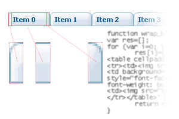

| CONTEXT HELP |
|---|
| Inner HTML |
|
 Any HTML code can be placed in menu item. This feature allows to use images (including animated ones) in menu items and/or apply complex item layout. This is another way (beside CSS) to configure menu appearance. With Inner HTML feature styles can be defined for each item separately. |